来源：https://cx05zf1grzt.feishu.cn/docx/FbygdLggFoQoXpxQSmvcgf7wnOd
大家好，我是阿钦。目前，我正跟随天盈教练参与同城夜校项目，并有幸结识了三位合伙人：奶油、咪咪和小埋。
起初，我们小组是最晚出单、最让人担忧的，但经过不断磨合迭代，我们实现了稳定出单，累计私域粉丝超过2k+人，一个月内共完成了100+笔订单，总GMV 5w+，总业绩排名第二名🥈。
航海结束后，天盈教练说，“你们厦门确实是给了我个惊喜。”
我们不是天赋组，但我们绝对是勤能补拙组。因此，我想把这次的经历作为一个复盘案例，分享我们的经验和心得。
具体项目情况请看：
起初，我们厦门夜校项目的笔记流量并不理想，大多数时候只有两位数的浏览量，主要原因有两个：
1、双十一电商活动的影响：小红书官方倾向于将流量导向电商平台，其他类目的笔记流量受到了冲击。
2、笔记内容同质化：由于市场上类似的笔记内容太多，用户缺乏新鲜感，不太愿意点击和查看我们的笔记。
在流量不佳的情况下，我是如何通过两个账号将小红书群的人数从零增长到九百多人？
秘诀只有两个：1、模仿爆款内容；2、代入用户视角
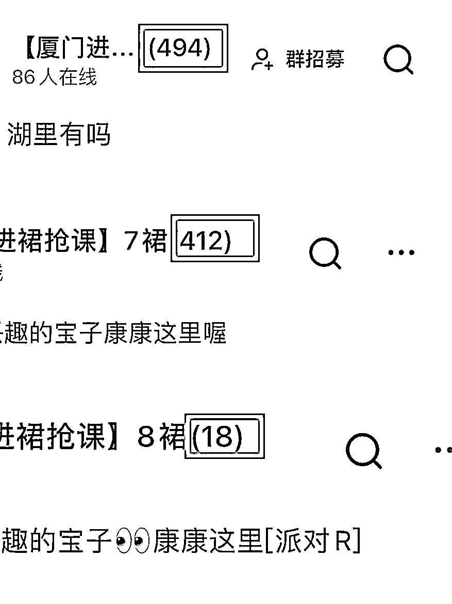
一个新账号可以通过发布热门互动贴来拉高账号的权重。
像电影、书籍、电视剧……这些热门话题都是很好的互动帖子。
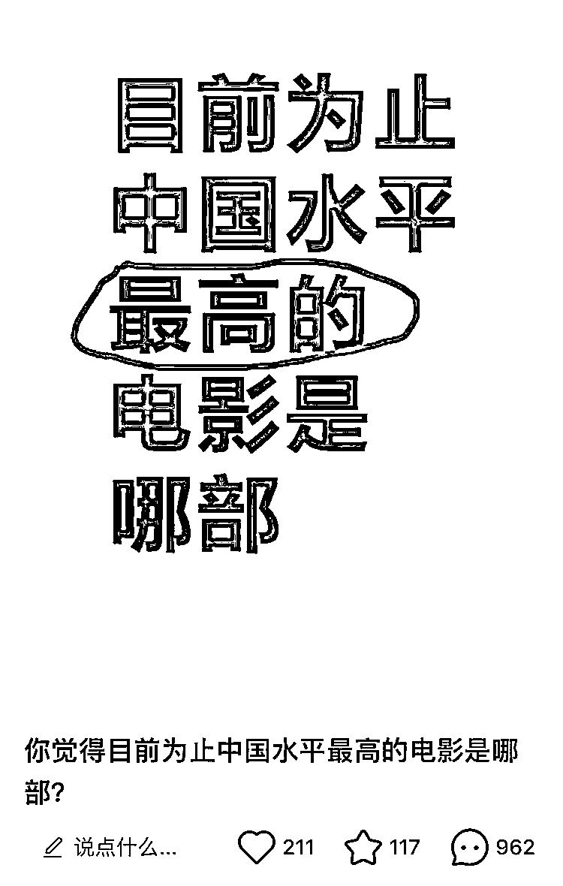
当你账号的流量不佳的时候，可以适当发布这类笔记，激活下账号。
我的理解是，小红书检测到你的笔记有爆款的潜力，于是给你的账号多分点流量。
当你多刷这类笔记，系统就会自动推荐类似的文章，一天发3篇互动贴，很快就能起号。
（某天起床看到99+，心情别提多愉悦了）
分享一句话，“不管刮风和下雨，日行5公里。“（多念几遍，印象深刻）
香菜老师第一天培训的时候就强调过，先不管数据好坏，日更3篇，养成习惯。
我把笔记分为三类：
（1）简单课表
电脑打开同行的小红书笔记，复制图片（直接就去水印了），然后用免费的WPS修改名字即可。
操作方法：导入图片→点击【插入】→点击【截屏】，取相同颜色→覆盖即可
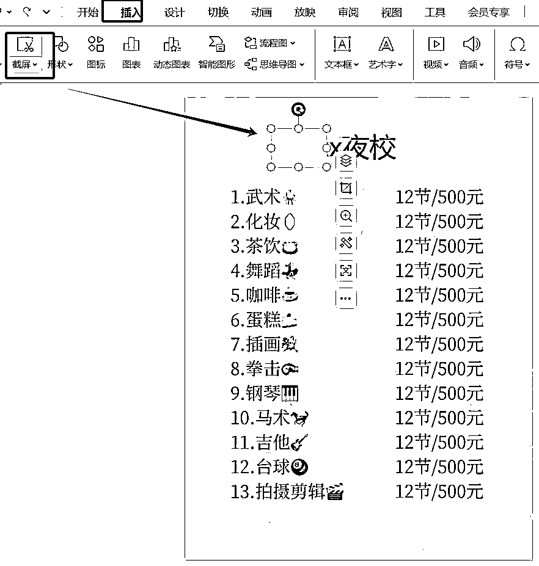
可能会影响浏览量的因素：
图片背景鲜艳度、字体好看度、字体大小，这些因素都需要不断测试。
如果你作为用户，点击进入小红书，一定是某个封面更加吸引人，你才会更愿意点击进去，进而评论、点赞、收藏，从而影响小红书对这篇笔记的推流。
（2）详细课表：添加地点、费用、上课时间
如果你的城市有课，可以按照教练提供的课程制作课表
如果某些地方没有课，可以先编着，大不了用户加过来之后解释说之后可能会出（先把人引流到再说）
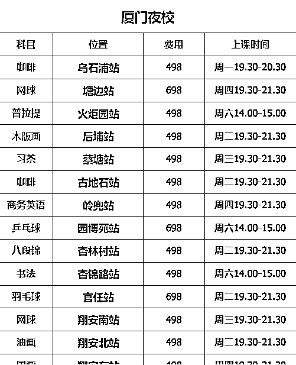
（3）上课图：经典4张拼凑图
这种图其实不怎么会爆，但是为什么要发呢？我们要带入到用户视角，大部分人对「夜校」这个词是无感的，甚至不太相信你是否有这么便宜的课。当他点击进入你的主页，看到那么多活动的图片，自然会感觉这个夜校比较靠谱。
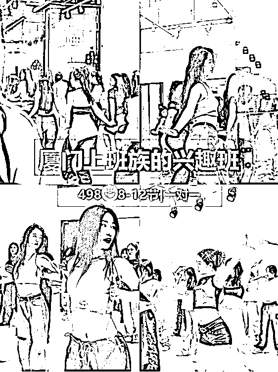
（1）建群：评论区回复群口令
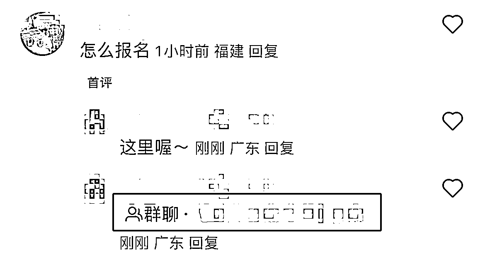
设置欢迎语→自动引导用户看置顶→小号发引流视频
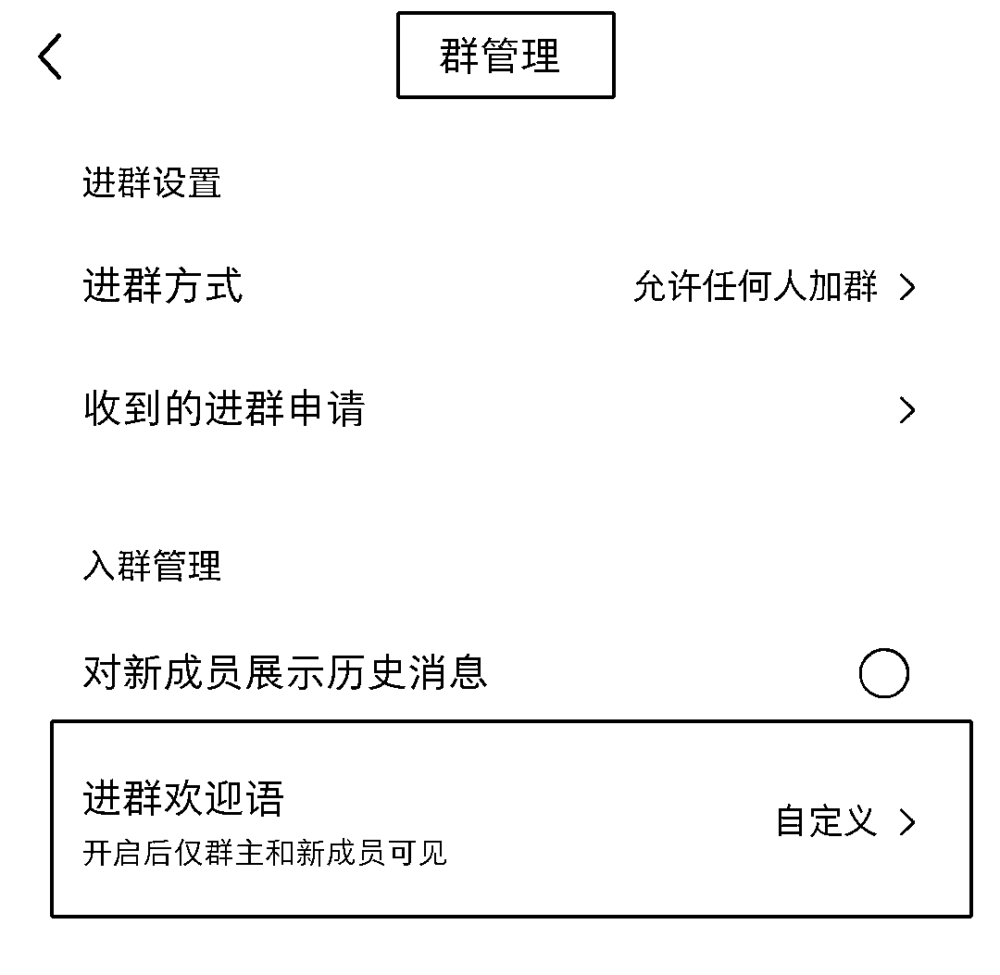
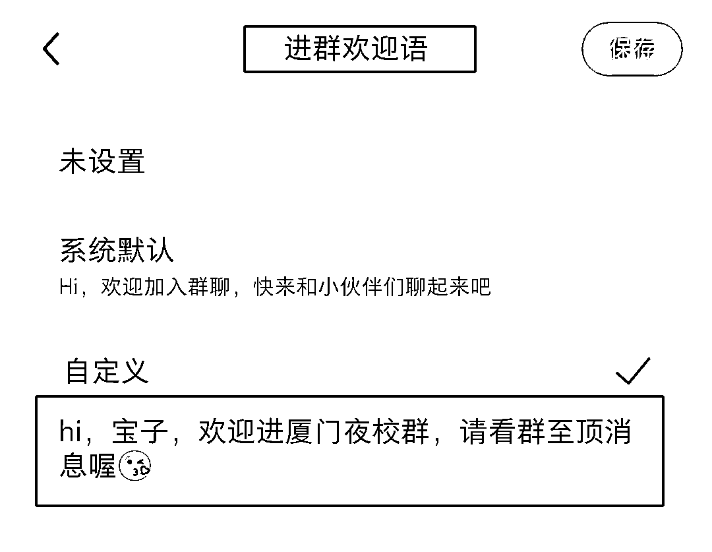
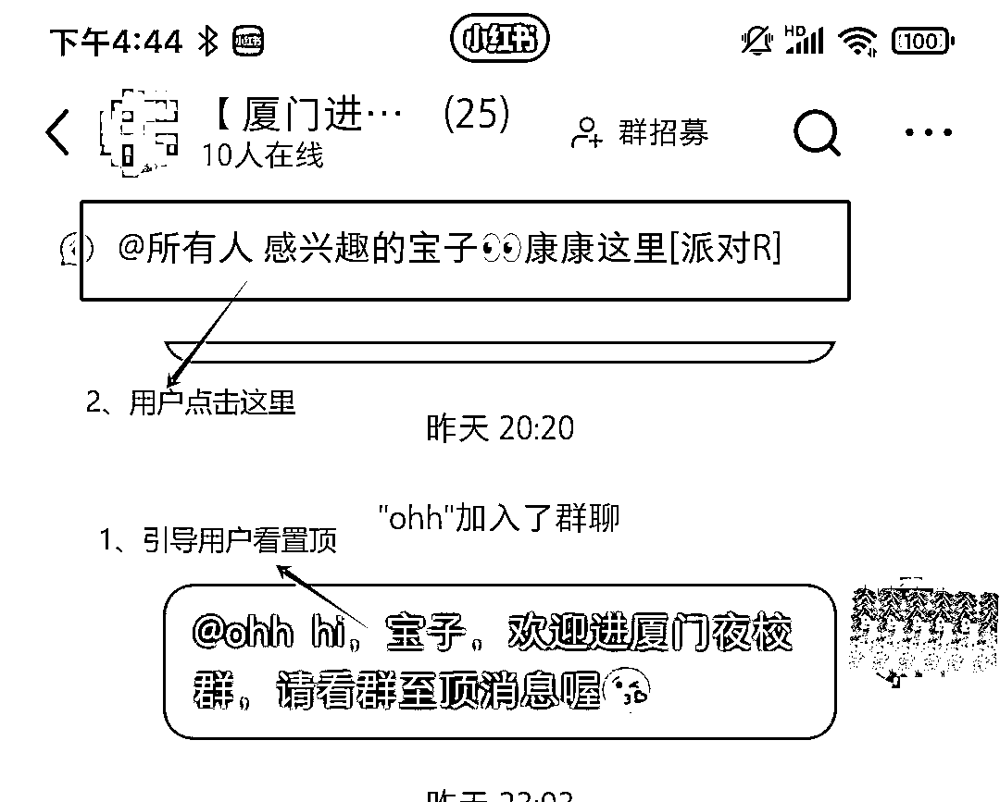
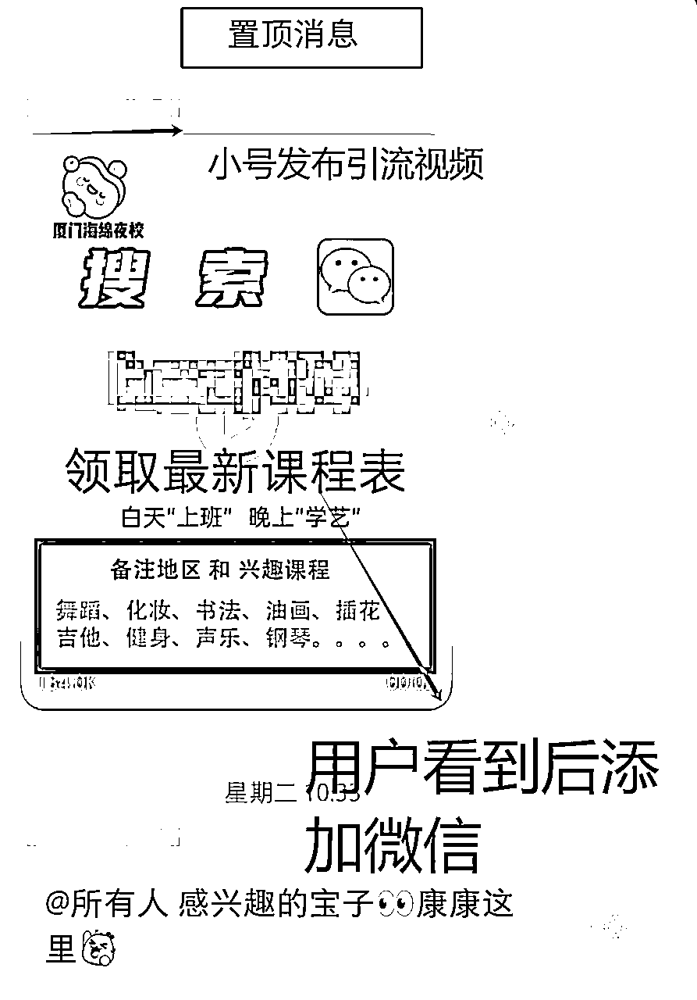
（2）设置打卡：在【群话题】→【话题名称】留下微信
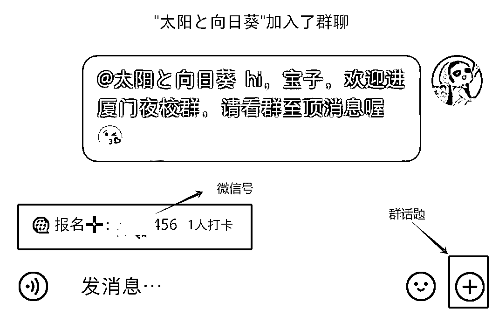
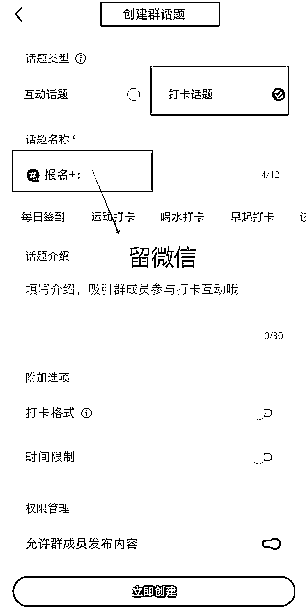
（3）私发：可以直接发引流视频，但是为了防止账号被举报，我都是直接发「分享群聊」
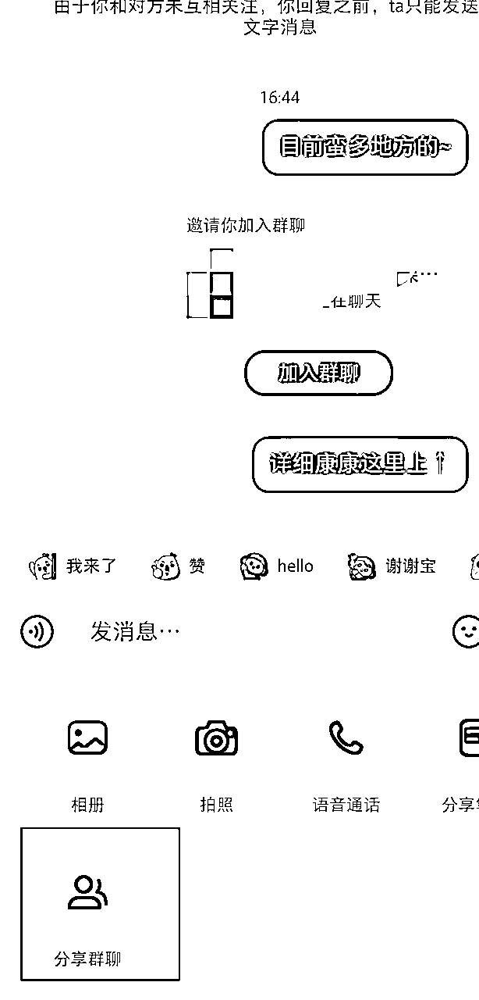
（4）主页设置打卡（来自圈友佳佳）
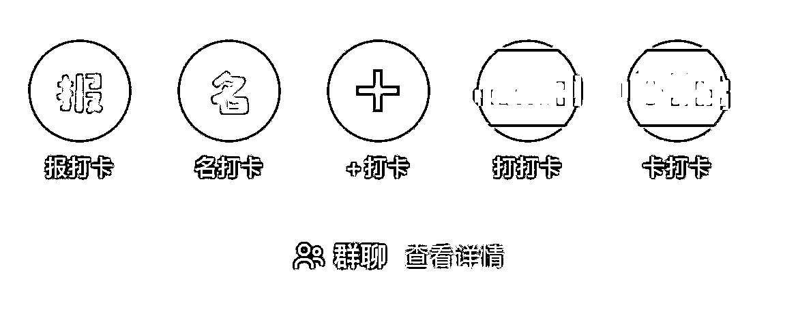
夜校的同行没那么多，而且用户也不会轻易举报你，所以这些引流动作相对安全
香菜老师开船第一天说过：“我们要做有温度的营销。”
我们的用户刚加过来的时候，对课程内容并不了解，加上信任度不够高，很难一下子成交。
我的很多单子都是在航海最后几天爆发的，还幸运地连续两天拿到天盈教练的奖励，单天出单数量NO 2。
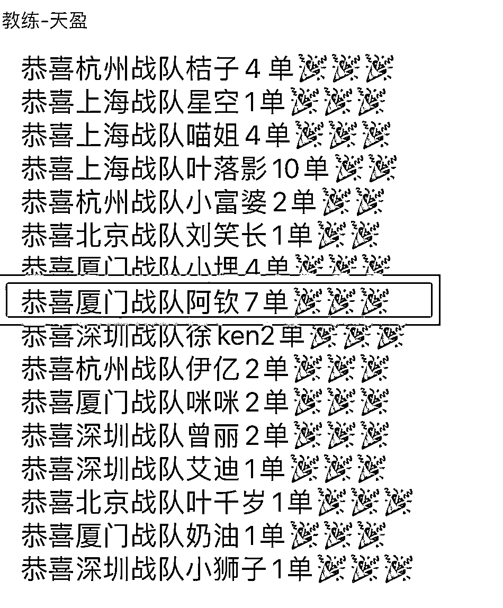
起初，我是干巴巴地介绍课程，或者直接丢小程序过去，这导致用户看完简单几句介绍后不搭理你了。
当客户问你xx课的时候，你要着重介绍xx课的优势，可以给她发一个往期学员的好评，或者是老师那边的宣传视频，用户看到了效果之后才会心动。
我很少说，“宝子要不要给你报一个呀？”
因为这会让客户觉得你在向她要钱。
一定是通过介绍课程的优势和好处，引导客户说，“我要报名，怎么报名呢？”
这时候把链接甩过去，自然而然就下单了。
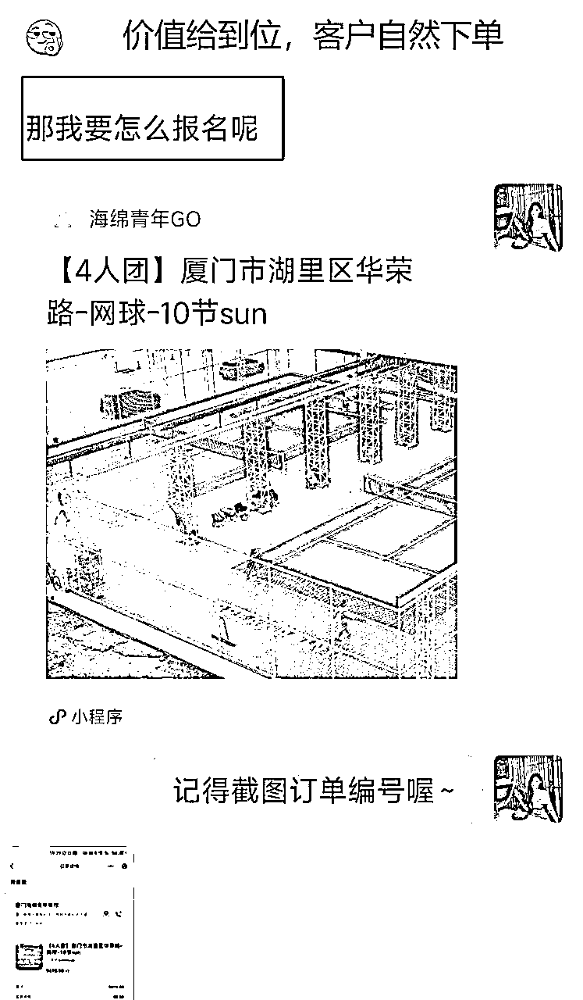
道理藏在生活中。
某天，我跟朋友一起吃饭，我问他要不要喝汤，他说不要。可是当我把汤端了上来，他发现是玉米萝卜汤，觉得还不错，于是就跑去盛汤了。
课程对他们来说并不是刚需，而是为了打发无聊，为了体验课程，为了在朋友圈装B。当他看到上完xx课后的效果，很容易就下单了。
我的大部分转化都是群功劳（来自桔子哥的启发）
一般跟客户没什么话可以聊之后，我都会直接发一个群链接，邀请他进群。
大部分人添加你的时候不会立刻下单的，千万别想着两三句话就想让人家交钱，大家都在观望。
群的好处就是让她看到我们是可信的，每天有在经营群，一旦有学员出来说好话，出单效果绝对比我们自夸100遍好~
群运营小妙招
（1）课程推崇：视频/图片+小程序+文案
大部分用户肯定是屏蔽我们的群消息，为了让用户看到群消息，引导他们点击进去浏览，所以要才把文案放置在最后（类似于起个爆款标题引导他们点击）
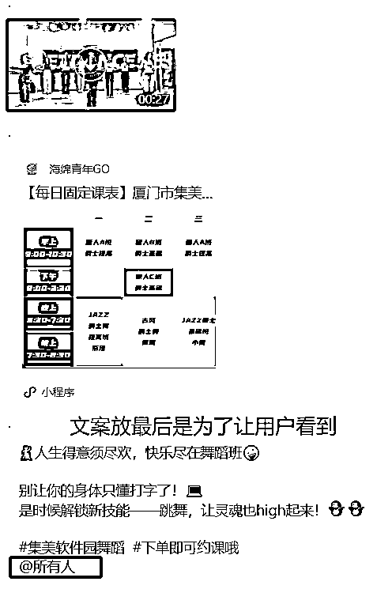
（2）余几位
有些用户不愿意先下单，她想等别人报名后剩下最后一个名额才交钱。
余xx位，就是为了让用户看到成团信息，让他们早点下单。
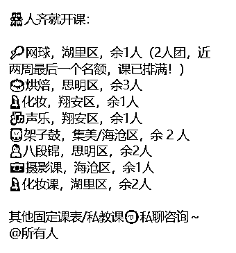
（3）学员好评
当我们看到学员晒上课照片，或者私底下有聊天，可以先给客户发10元红包，让她帮忙多说几句好话，然后我们再截图作为宣传。
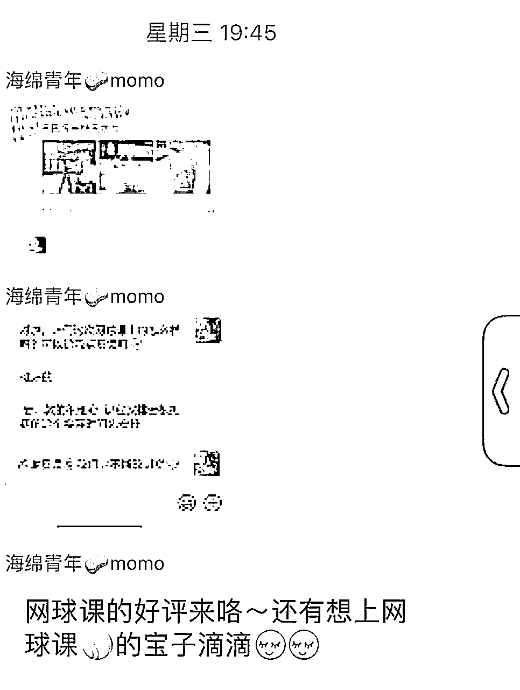
几乎每一次发布，总会炸出几个人聊天，然后找你私聊下单，这三招屡试不爽！
（4）群人数管控
当xx群达到200多个人的时候，就可以开一个新群。这样可以避免大群（4百多）某天被封了，或者某个广告进来把人引走了。
我们要把每一次朋友圈发布的内容，当做成一篇优质笔记。笔记展示得越好，用户就越想咨询。
除了以上群运营的内容可以发布外，还可以添加生活美图、某件事情的感悟，尽量把朋友圈打造得有趣好玩，让用户不愿意屏蔽你。
因为生财有很多精华帖是讲解怎么运营好朋友圈，这里我就不在多述，简单分个类：
当客户被朋友圈、社群触达后来找你下单，这时候的感觉就是feel倍爽！甚至有客户直接甩个付款截图（最喜欢偷偷下单的客户了）
起初，厦门的流量很差，我们是最晚出单的小组之一。
直到某天，组员奶油出单了，我们小组非常开心，差点就想发出：告诉俺娘，厦门不是“孬种”！
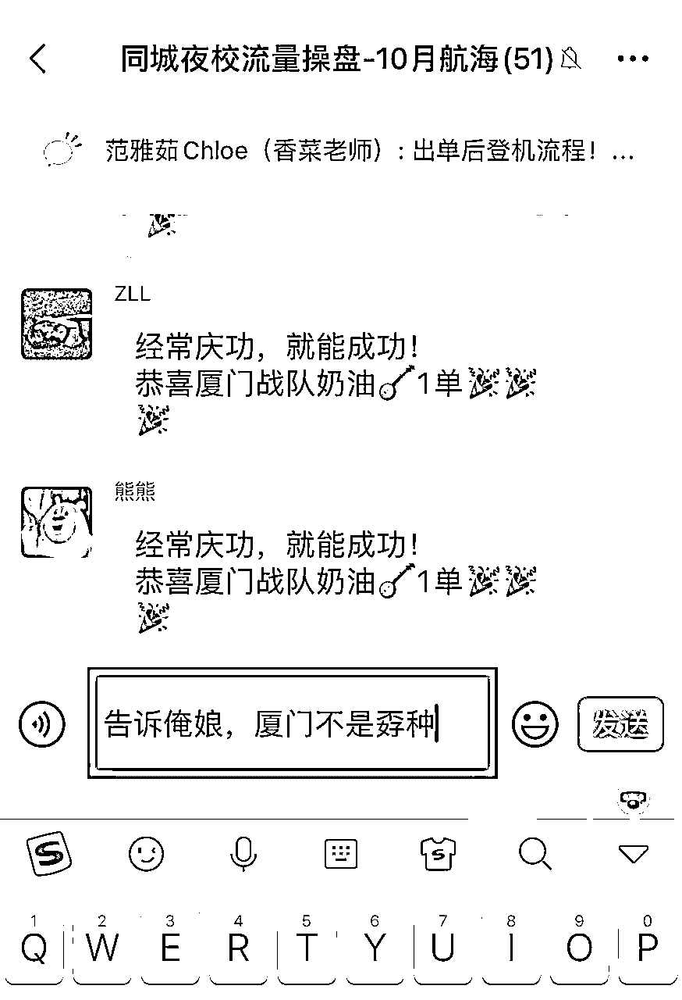
分享一下我们四人是怎么合作提效的
我们会各自收集视频，打包发到群，作为混剪素材，并且还建了小红书爆款笔记分享的群，把爆款的笔记都丢进去。
K哥建议我们根据各自的专长分配任务。因此，我们迅速分工：我负责小红书的运营，奶油负责客户转化，咪咪负责群组建设，小埋负责视频制作。我一口气完成了四人的小红书笔记。
第二天起床，变天了！我和咪咪的小红书笔记爆了，泼天的富贵轮到我们啦！
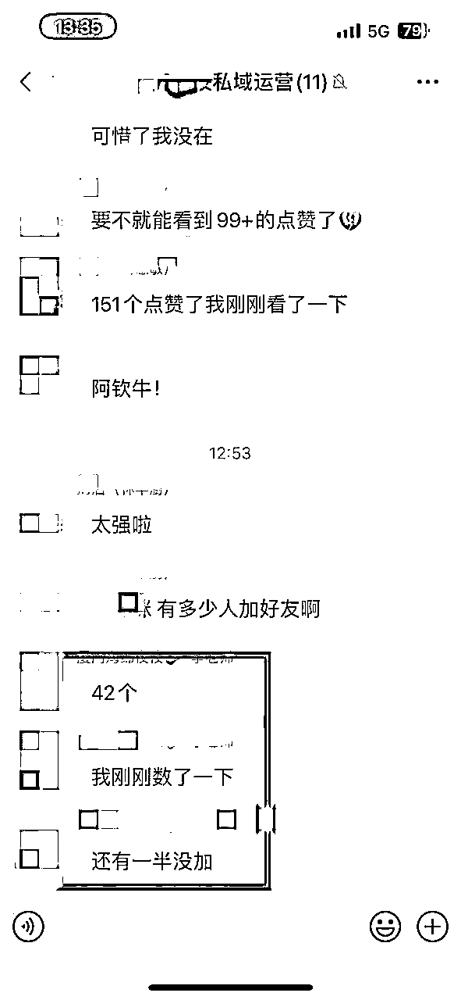
如果你的流量较大，可以考虑独立建群。但由于我们起初流量有限，我们选择合力建群运营。这样做的好处是，同时群发消息更加高效，能够一次性触达上百人。
我们不断优化沟通话术。一旦发现某个话术效果显著，我们会立即分享给团队成员。
这是一件非常重要的事情！
起初，我们的网球课并不好卖，只有6节课，客户觉得贵，但是来咨询的人特别多。直到某天，有个网球机构找到了我们主动谈合作。
经过一番谈判，我们说服他们提供8节课程（室内球馆，不必担心日晒）。敲定好上课内容之后，上线2天，直接卖了13单！老师都忙不过来了。
因为我们在市场一线，非常清楚学员的脾性，所以每次和商家谈合作，我都会建议商家多开2节课。只要比其他机构多2节课，报名率会大大上升，有些学员甚至愿意跨区来上课。
起初，我们也抱怨过来钱慢，但是当我们的流量好起来，用户逐渐增多的时候，很快就能体会到私域的好处！
同城夜校私域粉的“三高”好处
高留存：同城粉留存率高，不会轻易退群或删除你
高裂变：“拖家带口”来报名，我有不少单子，是一次性报了3单（4人团）
高复购：兴趣是多变的，她对架子鼓感兴趣，也可能会对拳击、吉他感兴趣
后期变现延展
同城相亲、旅游、霸王餐、知识付费、低转高收费、商家入驻平台收取费用……可以变现的方法实在太多了！
第一次参加线下航海，我深刻地感受到大家聚在一起办公执行力有多么地强！
以前在线上做项目，很容易就会偷懒。但是在线下当你看到队员都在努力的时候，你会想着逼自己一把。
于是，从早上九点工作到晚上十一点，这种工作强度已经是家常便饭。有时候战友们也会互相调侃，“你这辈子有为谁拼过命吗？”
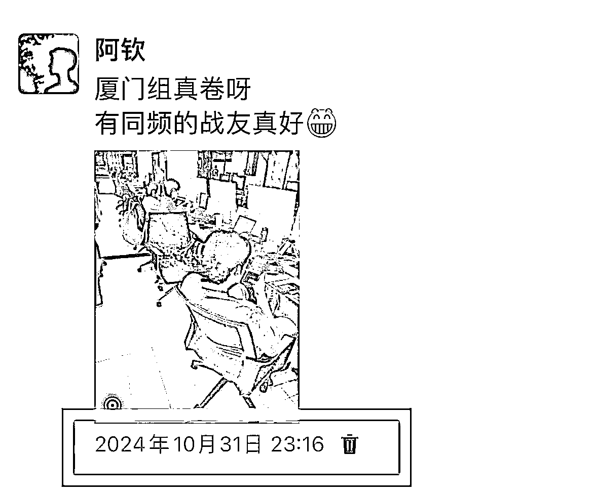
还记得天盈教练在开船第一天说过，“先破破烂烂地上路，再缝缝补补地完善”。
没错，是这样的。
回忆起当初拎着行李就来到白云，到现在“驻扎”在海绵青年总部；从寥寥几节课，到不断跟很多商家谈合作增加课程；从不出单，到每天稳定出几单，这一切变化都是在一个月不断的完善的！
因此，我强烈推荐各位圈友参加一次线下航海，体验“一群人一条心一起做一件事”，你会进步神速！
PS：我们厦门小组在航海结束后全都留在广州，继续跟随天盈教练深耕项目，计划在12月份，将私域积累到1w+！4个月内实现100w营收！
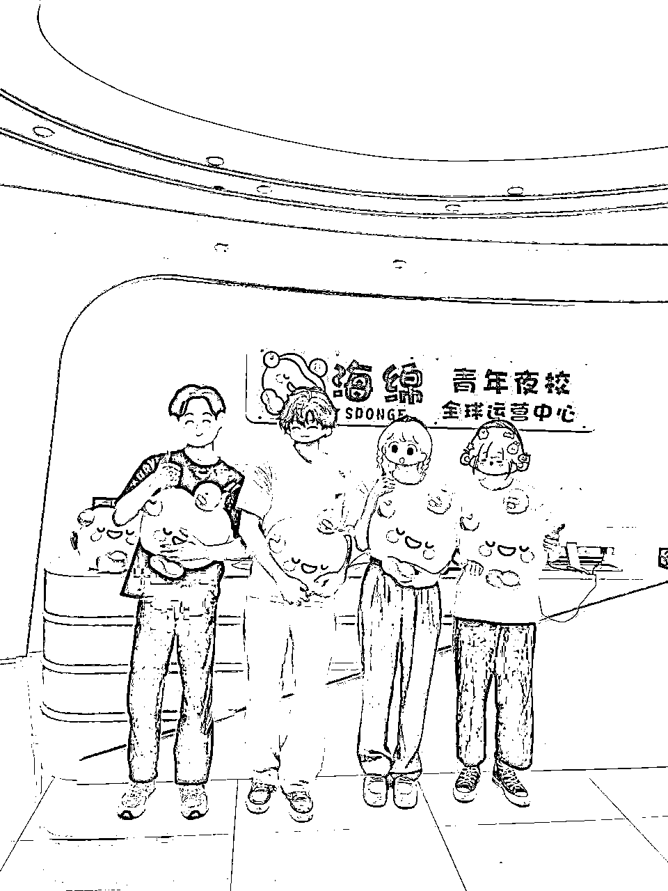
最后，由衷地感谢生财有术开设线下航海，
感谢天盈教练、香菜老师、k哥的带领，
感谢各位圈友无条件分享项目经验，
感谢三位合伙人对我的包容和帮助，
我们下期同城夜校项目再见！